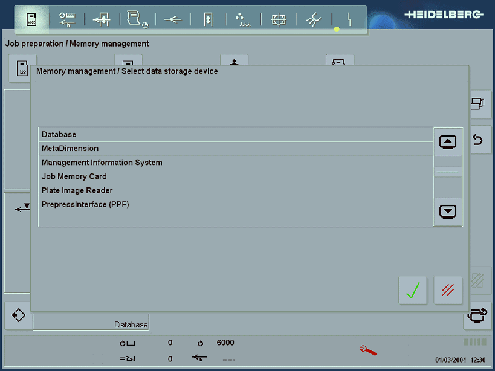
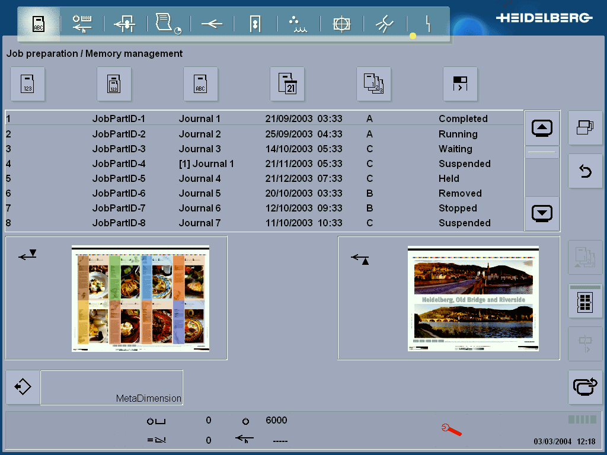
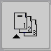
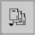
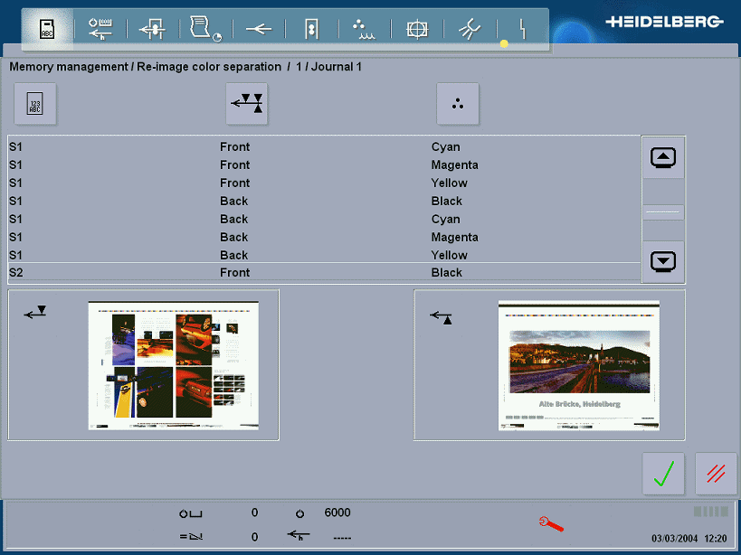

To use the "Remote control platesetter" functionality, go to the "Job preparation > Memory management" form. First select the "MetaDimension" device (or the device name set in the configuration) in "Select data storage device".

Click "OK" to return to the form with the job list. For a certain amount of time (max. 10 sec.) the system will try to transfer data between CP2000 and Prinect Shooter. During this period, the status bar displays a rotating watch hand.
If the data are transferred correctly, the jobs will be seen in the job list.

The columns that can be shown are listed in the table below. Certain columns can be selected in the configuration, as previously described.
|
Order ID in Prinect Shooter or JobID from the MIS (MIS: only when connected to the Prinect Integration Manager) |
Every row in the job list shows certain attributes of a job. A job is clearly identified in the first column by the JobID.
If "MemoryPlus" is licensed, you can select the buttons above the columns for sorting as well as use the common filter functionality.
For each selected order a thumbnail (preview) of the front and back side is shown from the first sheet.
The functionality of the buttons is as follows:
Preferred (raise priority): In the CP2000 version 41, this button sets priority to "A" (urgent) for the selected job.

In the CP2000 version 42 and higher, this button raises the priority of the selected job up one level.
The button below sets the priority of the selected job back one level. This button is available only as of CP2000 version 42.

Re-image: The list of separations is shown in a new form for the selected job, where you can select a separation that needs to be re-imaged.
Continue: The selected order, which is in "suspended" status, will continue.
The various buttons are set to "Enabled" according to the job status. Assignment is as follows:
"Raise/change priority" and "Continue" are applied directly to the selected job. After the action is done, the job list will then show the change in priority or job status.
On the other hand, click "Re-image" to call up the color separation data for the selected job from Prinect Shooter. This data is shown in a new "Memory management/Re-image color separation" form.
The order number and the order name are shown in the title line of the "Memory management/Re-image color separation" form.

The various columns are listed in the following table.
If "MemoryPlus" is licensed, you can select the buttons above the columns for sorting as well as use the common filter functionality.
Every row defines a certain printing plate that can be re-imaged based on the three attributes, "Sheet name", "Side" and "Separation".
Thumbnails (preview images) of the front and back side of the associated sheet are shown for each selected line or separation.
You can select a row and click "OK" to submit the re-imaging of this separation to Prinect Shooter. After that the form closes - as with the "Cancel" button - and the updated version of the Prinect Shooter job list is requested and displayed.
The re-image job («child job") appears in the job list with the name of the original job («parent job") and the "parent" JobID as a prefix. In Prinect Shooter, the new job is automatically assigned "urgent" as its priority and "For operational reasons" as its accounting attribute. "For operational reasons" means that the reprint was run for operational reasons, e.g. because an imaged plate was damaged.
"Main order": JobID = "1", Name = "Journal 1"
"Sub order": JobID = "4", Name = "[1] Journal 1"
At the appropriate time, Prinect Shooter allows only the parent job or re-imaging (child job). Simultaneous processing of the parent job and a child job is not permitted. Multiple re-imaging of a parent job is also not possible. As child jobs have the same name in the job list, this means that only one job from among the many jobs with the same name can be done at a given time.
Copyright © 2013 Heidelberger Druckmaschinen AG